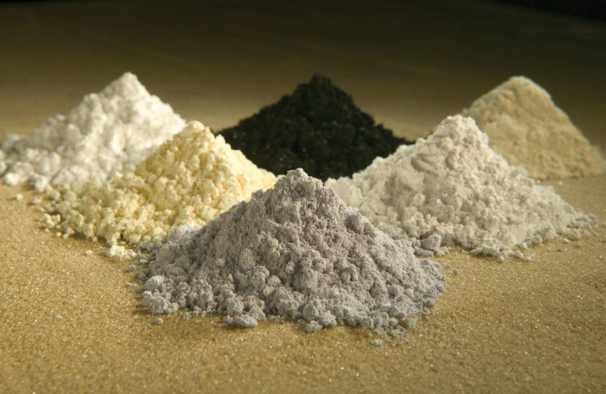

핵심광물 38종에서 51종으로…산업부, 희토류 10종·형석·인·게르마늄 넣는 고시 개정안 12월 7일까지 의견 받는다

9월 자원안보 협의회 지정계획을 고시에 반영, 인·형석은 배터리 양극재·전해액 원료로 꼽혀 / 비축 품목은 24종에서 29종으로, 취약 광종 비축 목표는 최대 365일
산업통상부가 핵심광물을 38종에서 51종으로 늘리는 「국가자원안보 확보를 위한 고시」 일부개정안을 11월 17일 행정예고(공고 제2026-702호)했다. 새로 들어가는 13종은 희토류 10종(프라세오디뮴·프로메튬·사마륨·유로퓸·가돌리늄·홀뮴·어븀·톨륨·이터븀·루테튬)과 형석, 인, 게르마늄이다.
개정안은 「국가자원안보 특별법」 개정으로 핵심광물의 범위가 '광물'에서 '광물 및 그 광산물'로 넓어진 데 맞춰, 고시로 정하는 광산물의 범위를 새 조항(제2조제3항)에 담는다. 13종 추가는 산업부가 9월 23일 제6차 자원안보 협의회에서 심의·확정한 「핵심광물 지정계획」을 고시에 옮기는 절차다. 산업부는 공급 리스크와 경제적 중요도를 평가해 51종을 골랐고, 평가 대상은 국내 광업법상 법정광물과 미국·일본·유럽연합 등 주요국이 지정한 핵심광물이었다.
산업부가 협의회에 낸 선정 사유를 보면 인은 에너지저장장치(ESS)용 배터리 양극재와 반도체 식각용 인산의 원료다. 형석은 반도체용 무수불산과 이차전지 전해액, 새 희토류 10종은 영구자석·형광체·레이저·원전 제어봉, 게르마늄은 방산용 열영상장비와 통신용 광섬유의 원료로 꼽혔다. 핵심광물은 2023년 2월 「핵심광물 확보전략」에서 33종이 선정됐고, 2025년 특별법 시행을 계기로 38종으로 늘었다.
같은 협의회에서 확정된 「제1차 핵심광물 비축계획」(2026~2035년)은 비축 품목을 24종에서 29종으로 늘리고, 공급망이 취약한 광종의 비축 목표를 180일에서 최대 365일로 올렸다. 공공 비축에 민간 보유재고와 재자원화 원료까지 더한 '국가총가용재고' 개념도 들여온다. 고시 개정안에 의견이 있는 기관·단체·개인은 12월 7일까지 찬반과 그 이유를 적은 의견서를 산업부 광물자원팀에 우편·이메일·팩스로 내면 된다.
시민에너지 관점
새로 핵심광물이 된 13종 가운데 인과 형석은 에너지저장장치와 이차전지 원료로 꼽혔다. 에너지전환이 깊어질수록 태양광과 배터리를 받쳐 줄 광물을 바깥에서 얼마나 안정적으로 들여오느냐가 함께 무거워진다는 뜻이다. 산업부가 재자원화 원료를 국가총가용재고에 넣겠다고 한 만큼, 지역에서 쓰고 난 배터리와 태양광 설비를 지역에서 모아 다시 자원으로 돌리는 일도 공급망의 한 축이 될 수 있다. 12월 7일까지인 의견 제출 기간에 지자체와 협동조합이 재자원화 거점과 회수 체계를 함께 제안할 때다.
출처: 산업통상부 2026-11-17 산업통상부 공고 제2026-702호 「국가자원안보 확보를 위한 고시」 일부개정안 행정예고 원문 보기
출처: 산업통상부 2026-09-23 보도자료 「자원안보 중장기 로드맵 마련, 위기에 강한 자원안보 대비태세 구축한다」(참고 3 핵심광물 지정계획 요약·참고 4 핵심광물 비축계획 요약) 원문 보기
重要鉱物を38種から51種に…産業部、レアアース10種・蛍石・リン・ゲルマニウムを加える告示改正案、12月7日まで意見募集
9月の資源安保協議会の指定計画を告示に反映、リンと蛍石は電池正極材・電解液の原料に / 備蓄品目は24種から29種に、脆弱鉱種の備蓄目標は最大365日
韓国の産業通商部は11月17日、重要鉱物を38種から51種に増やす「国家資源安保確保のための告示」の一部改正案を行政予告（公告第2026-702号）した。新たに加わる13種は、レアアース10種（プラセオジム・プロメチウム・サマリウム・ユウロピウム・ガドリニウム・ホルミウム・エルビウム・ツリウム・イッテルビウム・ルテチウム）と蛍石、リン、ゲルマニウムだ。
改正案は、「国家資源安保特別法」の改正で重要鉱物の範囲が「鉱物」から「鉱物及びその鉱産物」に広がったことに合わせ、告示で定める鉱産物の範囲を新しい条項（第2条第3項）に盛り込む。13種の追加は、産業部が9月23日の第6回資源安保協議会で審議・確定した「重要鉱物指定計画」を告示に移す手続きだ。産業部は供給リスクと経済的重要度を評価して51種を選び、評価対象は韓国の鉱業法上の法定鉱物と、米国・日本・欧州連合など主要国が指定した重要鉱物だった。
産業部が協議会に提出した選定理由によると、リンはエネルギー貯蔵装置（ESS）用電池の正極材と半導体エッチング用リン酸の原料だ。蛍石は半導体用無水フッ酸と二次電池の電解液、新たなレアアース10種は永久磁石・蛍光体・レーザー・原発の制御棒、ゲルマニウムは防衛用の熱画像装置と通信用光ファイバーの原料に挙げられた。重要鉱物は2023年2月の「重要鉱物確保戦略」で33種が選定され、2025年の特別法施行を機に38種に増えた。
同じ協議会で確定した「第1次重要鉱物備蓄計画」（2026～2035年）は、備蓄品目を24種から29種に増やし、供給網が脆弱な鉱種の備蓄目標を180日から最大365日に引き上げた。公共備蓄に民間の保有在庫と再資源化原料まで加えた「国家総可用在庫」の概念も導入する。告示改正案に意見がある機関・団体・個人は、12月7日までに賛否とその理由を記した意見書を産業部鉱物資源チームに郵便・電子メール・ファクスで提出できる。
市民エネルギーの視点
新たに重要鉱物となった13種のうち、リンと蛍石はエネルギー貯蔵装置と二次電池の原料に挙げられた。エネルギー転換が進むほど、太陽光と電池を支える鉱物を海外からどれだけ安定して調達できるかという問題も重くなるということだ。産業部が再資源化原料を国家総可用在庫に含めるとした以上、地域で使い終えた電池や太陽光設備を地域で集めて再び資源に戻す取り組みも、供給網の一つの柱になり得る。12月7日までの意見提出期間に、自治体と協同組合が再資源化の拠点と回収体制を併せて提案すべき時だ。
出典: 산업통상부 2026-11-17 산업통상부 공고 제2026-702호 「국가자원안보 확보를 위한 고시」 일부개정안 행정예고 原文を読む
出典: 산업통상부 2026-09-23 보도자료 「자원안보 중장기 로드맵 마련, 위기에 강한 자원안보 대비태세 구축한다」(참고 3 핵심광물 지정계획 요약·참고 4 핵심광물 비축계획 요약) 原文を読む
韩国核心矿产由38种增至51种…产业部发布加入10种稀土及萤石、磷、锗的告示修订案，征求意见至12月7日
将9月资源安全协议会确定的指定计划纳入告示，磷和萤石被列为电池正极材料和电解液原料 / 储备品种由24种增至29种，脆弱矿种储备目标最长365天
韩国产业通商部11月17日就将核心矿产由38种增至51种的《确保国家资源安全告示》部分修订案进行行政预告（公告第2026-702号）。新增的13种为10种稀土（镨、钷、钐、铕、钆、钬、铒、铥、镱、镥）以及萤石、磷和锗。
由于《国家资源安全特别法》修订后，核心矿产的范围由"矿物"扩大为"矿物及其矿产品"，修订案相应在新条款（第2条第3款）中规定由告示确定的矿产品范围。新增13种是将产业部9月23日在第六次资源安全协议会上审议确定的《核心矿产指定计划》纳入告示的程序。产业部通过评估供应风险和经济重要性选出51种，评估对象为韩国矿业法规定的法定矿物以及美国、日本、欧盟等主要国家指定的核心矿产。
根据产业部向协议会提交的入选理由，磷是储能系统（ESS）用电池正极材料和半导体蚀刻用磷酸的原料。萤石被列为半导体用无水氢氟酸和二次电池电解液的原料，新增的10种稀土是永磁体、荧光体、激光和核电站控制棒的原料，锗则是国防用热成像设备和通信用光纤的原料。韩国在2023年2月的《核心矿产确保战略》中选定了33种核心矿产，2025年特别法施行后增至38种。
同一协议会确定的《第一次核心矿产储备计划》（2026—2035年）将储备品种由24种增至29种，并将供应链脆弱矿种的储备目标由180天提高到最长365天。计划还引入"国家总可用库存"概念，在公共储备之外纳入民间持有库存和再资源化原料。对告示修订案有意见的机构、团体或个人，可在12月7日前将写明赞成或反对及理由的意见书，通过邮寄、电子邮件或传真提交给产业部矿产资源组。
市民能源视角
在新列为核心矿产的13种中，磷和萤石被列为储能系统和二次电池的原料。这意味着能源转型越深入，能否从外部稳定获得支撑太阳能和电池的矿产，这一问题也会越发沉重。既然产业部表示要把再资源化原料纳入国家总可用库存，那么在当地回收用过的电池和太阳能设备、使其重新成为资源，也可以成为供应链的一根支柱。在12月7日截止的意见征集期间，地方政府和合作社应当一并提出再资源化据点和回收体系的建议。
来源: 산업통상부 2026-11-17 산업통상부 공고 제2026-702호 「국가자원안보 확보를 위한 고시」 일부개정안 행정예고 查看原文
来源: 산업통상부 2026-09-23 보도자료 「자원안보 중장기 로드맵 마련, 위기에 강한 자원안보 대비태세 구축한다」(참고 3 핵심광물 지정계획 요약·참고 4 핵심광물 비축계획 요약) 查看原文
Korea moves to expand its critical minerals list from 38 to 51, adding 10 rare earths, fluorspar, phosphorus and germanium; comments until Dec. 7
Notice turns September's designation plan into rules, with phosphorus and fluorspar cited as inputs for battery cathodes and electrolytes / Stockpiled items rise from 24 to 29, with targets of up to 365 days for vulnerable minerals
Korea's Ministry of Trade and Industry gave advance notice on Nov. 17 of a partial amendment to the "Notice on Securing National Resource Security" that would expand the list of critical minerals from 38 to 51 (Notice No. 2026-702). The 13 additions are 10 rare earth elements (praseodymium, promethium, samarium, europium, gadolinium, holmium, erbium, thulium, ytterbium and lutetium) plus fluorspar, phosphorus and germanium.
Because an amendment to the "Special Act on National Resource Security" widened the scope of critical minerals from "minerals" to "minerals and their mineral products," the draft adds a new clause (Article 2, Paragraph 3) defining which mineral products the notice covers. Adding the 13 minerals puts into the notice the "Critical Mineral Designation Plan" that the ministry reviewed and finalised at the sixth Resource Security Council on Sept. 23. The ministry chose the 51 by assessing supply risk and economic importance, looking at minerals defined under Korea's Mining Act and those designated as critical by the United States, Japan, the European Union and other major economies.
According to the selection reasons the ministry presented to the council, phosphorus is an input for battery cathodes used in energy storage systems (ESS) and for phosphoric acid used in semiconductor etching. Fluorspar was cited for anhydrous hydrofluoric acid for chips and electrolyte for rechargeable batteries; the 10 new rare earths for permanent magnets, phosphors, lasers and nuclear control rods; and germanium for military thermal imaging equipment and optical fibre for telecommunications. Korea selected 33 critical minerals in its February 2023 "Critical Minerals Security Strategy" and raised the number to 38 when the special act took effect in 2025.
The "First Critical Mineral Stockpiling Plan" (2026-2035), finalised at the same council meeting, increases stockpiled items from 24 to 29 and raises the stockpiling target for minerals with vulnerable supply chains from 180 days to as many as 365 days. It also introduces a "total national available inventory" concept that counts private stocks and recycled raw materials alongside public stockpiles. Institutions, organisations and individuals with views on the draft can send a written opinion stating support or opposition with reasons to the ministry's Mineral Resources Team by post, email or fax by Dec. 7.
Citizen Energy View
Of the 13 new critical minerals, phosphorus and fluorspar were cited as inputs for energy storage and rechargeable batteries. The deeper the energy transition goes, the heavier the question of how reliably Korea can import the minerals behind solar power and batteries. Since the ministry plans to count recycled raw materials in its total national inventory, collecting used batteries and solar equipment locally and turning them back into resources could become one pillar of the supply chain. The comment period to Dec. 7 is the time for local governments and cooperatives to propose recycling hubs and collection systems as well.
Source: 산업통상부 2026-11-17 산업통상부 공고 제2026-702호 「국가자원안보 확보를 위한 고시」 일부개정안 행정예고 Read the original
Source: 산업통상부 2026-09-23 보도자료 「자원안보 중장기 로드맵 마련, 위기에 강한 자원안보 대비태세 구축한다」(참고 3 핵심광물 지정계획 요약·참고 4 핵심광물 비축계획 요약) Read the original